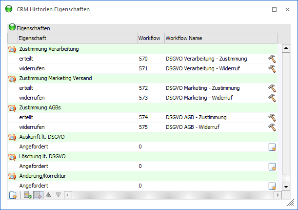
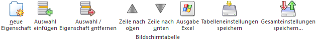
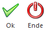

Mit Hilfe des Menüpunkts
1 WinLine START
1 Optionen
1 CRM Historien Eigenschaften
können Eigenschaften des Typs "C - CRM Historie" schnell und effizient angelegt werden. Diese Eigenschaften haben die Besonderheit, dass bei der Hinterlegung in einem Stammdatenobjekt zunächst ein CRM Fall erzeugt wird, in welchem die Tätigkeit nachvollziehbar dokumentiert werden kann. Erst nach der erfolgreichen Speicherung des CRM Falls wird die Eigenschaft im Stammdatenobjekt gesetzt (weitere Informationen können Sie dem Kapitel Hinterlegung von CRM Historien Eigenschaften entnehmen).
Achtung
Voraussetzung für die Nutzung von CRM Historien Eigenschaften ist ein Benutzer des Typs "CRM Benutzer". Handelt es sich um einen Benutzer nur des Typs "CWL Benutzer" (d.h. "CRM Benutzer" ist in der Benutzeranlage nicht - zusätzlich - aktiviert worden), so ist die gewählte Eigenschaft im Stammdatenobjekt sichtbar, kann aber nicht verändert werden.
Hinweis 1
Hinterlegungen im Programm "Workflow-Vorlagen" werden bei Ausführung des CRM Falls nicht berücksichtigt. Des Weiteren können CRM Historien Eigenschaften nicht im WinLine EXIM verwendet werden! Sollte die Anforderung bestehen, die Eigenschaft per Import zu setzen, so muss der zugeordnete Workflow (d.h. ein CRM Fall für diesen) mit dem jeweiligen Stammdatenobjekt importiert werden.
Hinweis 2
Standardmäßig werden einige Eigenschaften mit ausgeliefert, welche im Zusammenhang mit der DSGVO (Datenschutzgrundverordnung) verwendet werden. Die Auflistung der Eigenschaften mit deren Verwendung kann dem Kapitel WinLine Eigenschaften entnommen werden.

In der Tabelle werden alle bestehenden Eigenschaften des Typs "C - CRM Historie" aufgelistet. Diese können verändert bzw. ergänzt oder komplett neue Eigenschaften angelegt werden (siehe Tabellenbutton "neue Eigenschaft").
Ø Eigenschaft / Auswahl
Handelt es sich um die Eigenschaft an ich, so wird an dieser
Stelle das Icon  dargestellt und
die Zeile farblich unterlegt. Ansonsten ist die Zeile eine Auswahlmöglichkeit
der Eigenschaft im Stammdatenobjekt.
dargestellt und
die Zeile farblich unterlegt. Ansonsten ist die Zeile eine Auswahlmöglichkeit
der Eigenschaft im Stammdatenobjekt.
Ø Eigenschaft
An dieser Stelle erfolgt die Hinterlegung der Bezeichnung (Eigenschaft bzw. Auswahl).
Ø Workflow
Handelt es sich bei der aktiven Zeile um eine Auswahlmöglichkeit der Eigenschaft, so kann hier ein Workflow (CRM Aktion oder Workflow Startpunkt) hinterlegt werden. Dieser Workflow wird gestartet, sobald die Auswahl im Stammdatenobjekt gewählt wird.
Achtung
Die Workflows müssen pro Mandant hinterlegt werden.
Hinweis 1
Sollte an dieser Stelle keine Zuordnung zu einem Workflow erfolgen, so wird automatisch die CRM Aktion "555 - CRM Eigenschaft" genutzt. Zusätzlich kann jeder Workflow nur 1x pro Mandant zugeordnet werden.
Hinweis 2
Die Standard CRM Historien Eigenschaften "Auskunft lt. DSGVO", "Löschung lt. DSGVO" und "Änderung/Korrektur" werden ohne separate CRM Aktionen zur Verfügung gestellt, d.h. es wird die CRM Aktion "555 - CRM Eigenschaft" bei Verwendung genutzt. Wenn in CRM-Auswertungen (d.h. auch bei der Auskunftserteilung) eine detailliertere Information über die Tätigkeit ausgegeben werden soll (Information "Status"), so müssen separate CRM Aktionen oder Workflow Startpunkte zugeordnet werden.
Ø Workflow Name
In dieser Spalte wird der Name des Workflows angezeigt. Ist das Feld "Workflow" noch nicht mit Inhalt versehen worden, so kann durch Eingabe einer Bezeichnung und Anwahl des Icons (siehe Spalte "Workflowstatus") ein neuer Workflow (CRM Aktion) erzeugt werden.
Ø Workflowstatus
An dieser Stelle wird der Status der Workflows in Form eines Icons dargestellt.
ü - bestehender Workflow
Es handelt sich
um einen bestehenden Workflow. Per Doppelklick auf dieses Icon wird der
Workfloweditor geöffnet und die CRM Aktion bzw. der Workflow Startpunkt direkt
angezeigt.
ü - neuen Workflow anlegen
Das Feld
"Workflow" wurde noch nicht mit Inhalt versehen. Durch die Angabe einer
Bezeichnung in der Spalte "Workflow Name" und Anwahl dieses Icons wird
automatisch eine neue CRM Aktion im Workfloweditor generiert. Die Speicherung
der neuen CRM Aktion erfolgt hierbei direkt im Editor, ist also unabgängig von
der Speicherung im Fenster "CRM Historien Eigenschaften".
ü - neuer Workflow
Es wurde ein Workflow
in der Spalte "Workflow" hinterlegt, aber eine Speicherung der CRM Historien
Eigenschaften ist bisher noch nicht erfolgt.
Tabellenbuttons

Ø neue Eigenschaft
Mit Hilfe des Buttons "neue Eigenschaft" kann eine neue Eigenschaft angelegt werden.
Ø Auswahl einfügen
Mit diesem Button kann eine neue Auswahl für die Eigenschaft eingefügt werden.
Ø Auswahl / Eigenschaft entfernen
Mit diesem Button können Eigenschaften bzw. bestehende Auswahlen gelöscht werden. Dieser Button ist nur dann aktiv, wenn es sich um eine selbst angelegte Eigenschaft (Wert > 1000) handelt und ausreichend Objektrechte vorhanden sind.
Hinweis
Durch Anklicken des Buttons "Auswahl / Eigenschaft entfernen" werden alle vorhandenen Mandanten auf die Verwendung der Eigenschaft überprüft. Sollte diese tatsächlich verwendet werden, so wird eine entsprechende Meldung angezeigt und es kann entschieden werden, ob tatsächlich gelöscht werden soll.
Ø Zeile nach oben/ Zeile nach unten
Mit diesen Buttons kann die Reihenfolge der Eigenschaften bzw. der Auswahlmöglichkeiten geändert werden.
Ø Ausgabe Excel
Durch Anwahl des Buttons "Ausgabe Excel" wird der Inhalt der Tabelle nach Microsoft Excel übergeben.
Ø Tabelleneinstellungen speichern
Die Spalten einer Tabelle können grundsätzlich an beliebige Positionen verschoben, bzw. in der Breite entsprechend angepasst werden. Durch Anwahl des Buttons "Tabelleneinstellungen speichern" werden die Einstellungen benutzerspezifisch gespeichert und bei dem nächsten Aufruf des Programmpunktes wieder vorgeschlagen.
Ø Gesamteinstellungen speichern
Im Gegensatz zu "Tabelleneinstellungen speichern" können mit "Gesamteinstellungen speichern" mehrere Tabellenaufbauten gespeichert und nach Wunsch geladen werden. Zusätzlich werden Sonderfunktionen der Tabelle (z.B. "Spalte gruppieren") ebenfalls bei der Speicherung bedacht.
Buttons

Ø Ok
Durch Anwahl des Buttons "Ok" bzw. der Taste F5 werden die Eigenschaften mit deren Auswahlmöglichkeiten gespeichert. Neue CRM Historien Eigenschaften erhalten hierbei automatisch folgende Zuordnungen:
ü Stammdatenobjekte
Die
Eigenschaften können bei den Stammdatenobjekten "3 - Personenkonten", "5 -
Interessenten", "11- Kontakte" und "14 - Arbeitnehmer" verwendet werden.
ü Objektberechtigungen
Der
aktuelle Benutzer erhält das Recht "5 - Ersteller". Zusätzlich erhalten alle
Benutzergruppen das Objektrecht "2 - bearbeiten".
Hinweis
Veränderungen an den Stammdatenobjekten bzw. den Objektberechtigungen können im Fenster Eigenschaftenstamm vorgenommen werden.
Ø Ende
Durch Anwahl des Buttons "Ende" bzw. der Taste ESC wird das Fenster geschlossen und alle nicht gespeicherten Eingaben (ausgenommen sind neu angelegte CRM Aktionen) verworfen.